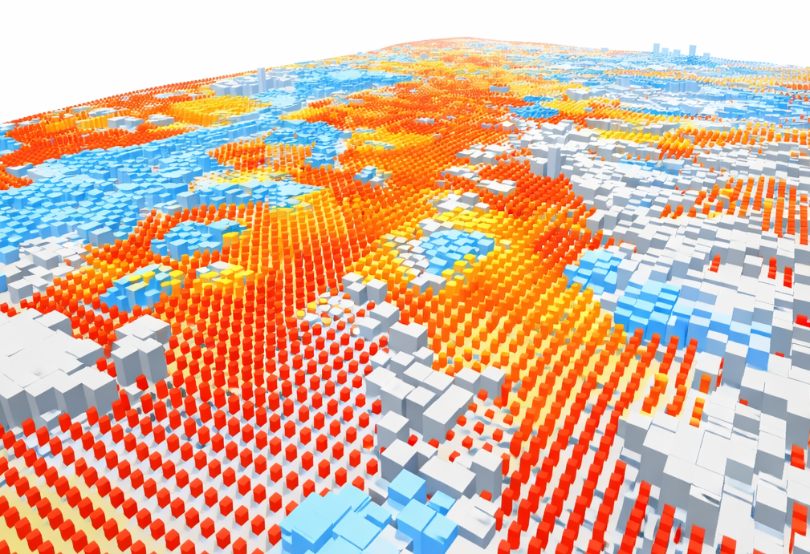
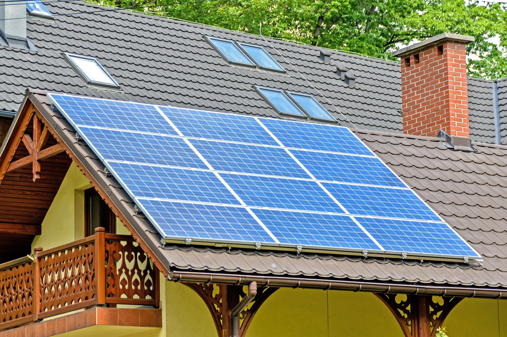
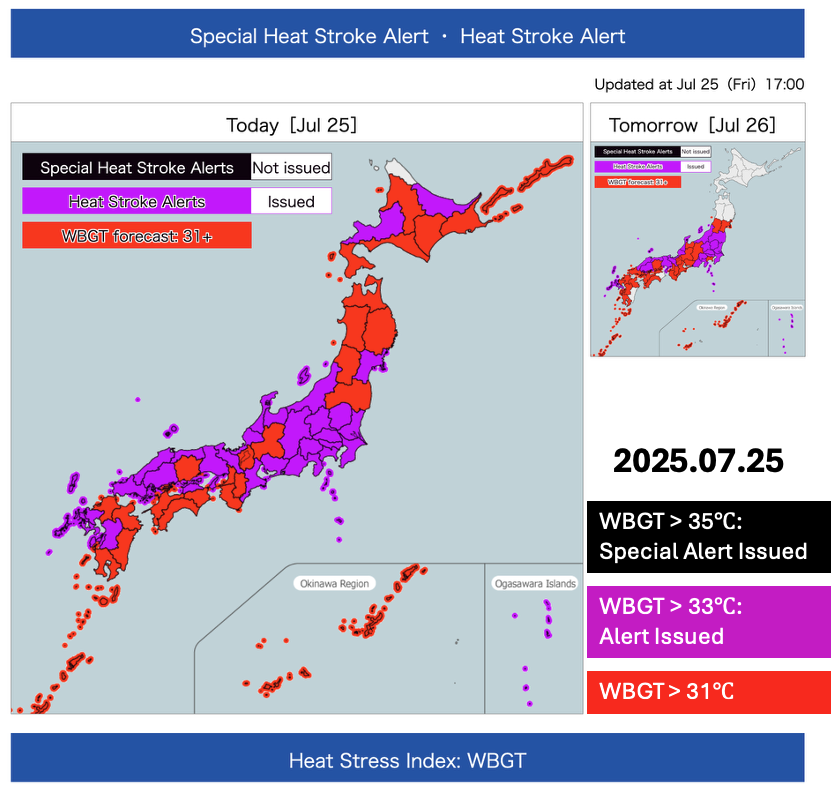

University of Tsukuba
The C2S Lab advances the concept of Climate Smart City by integrating urban climate science, engineering solutions, and decision-making frameworks to reduce climate risk, improve energy efficiency, and enhance urban resilience under climate change. Our research bridges physical urban environments, socio-economic systems, and human well-being, spanning scales from buildings and neighborhoods to entire cities.

We develop and apply high-resolution urban climate models to simulate temperature, humidity, radiation, and airflow at neighborhood and street scales. By incorporating detailed urban morphology, land-use patterns, and surface characteristics, our modeling framework quantifies how urban form and materials influence microclimates and human thermal comfort, providing scientific evidence for heat-mitigation planning.
With a focus on commercial buildings and outdoor activity spaces (e.g., theme parks, pedestrian zones, and large public venues), we evaluate heat stress exposure for workers, customers, and visitors across indoor and outdoor environments. Our research assesses the effectiveness of mitigation strategies—including shading, ventilation optimization, surface material selection, and cooling technologies—while explicitly accounting for business performance, customer experience, and operational feasibility.

We explore the role of rooftop solar power generation and other distributed renewable energy systems in reducing urban energy demand and heat exposure. By coupling solar potential assessments with urban climate and building energy simulations, we examine co-benefits and trade-offs between renewable energy deployment, surface temperature reduction, and future energy resilience under climate change.

We evaluate and enhance public heat-health warning systems by comparing traditional temperature-based alerts with integrated heat stress indicators that account for humidity, radiation, and human behaviors. We design and evaluate localized heat stress indicators by leveraging real-world climate conditions and human health outcomes. Our work supports the development of more accurate, actionable, and population-specific warning systems that improve risk communication and reduce heat-related health impacts.
We analyze how increasing heat stress affects business operations, workforce safety, energy demand, and economic performance. By integrating climate projections with socio-economic and operational data, we support businesses and urban stakeholders in developing climate-adaptive strategies, such as heat-resilient infrastructure investment, flexible work arrangements, and climate-informed risk management.
We assess the effectiveness, limitations, and equity implications of individual-level cooling devices and equipment, including air conditioning, fans, wearable cooling technologies, and emerging passive cooling solutions. Our research emphasizes balancing thermal protection, energy efficiency, affordability, and accessibility, particularly for vulnerable populations facing intensifying heat exposure.